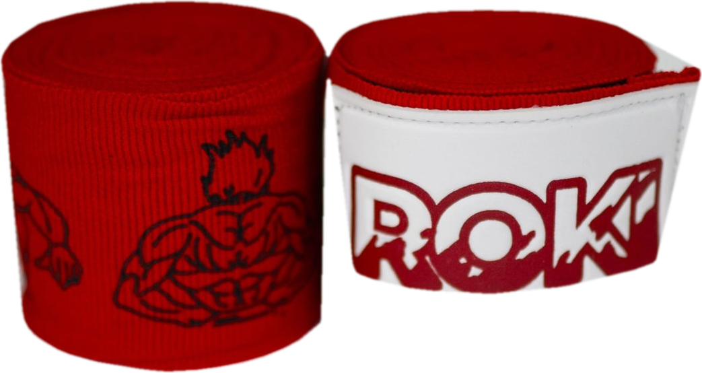

MADE FOR THE STRIKERS
NO QUIT. NO FRAY. NO SLIP.

THE GRAPPLERHAND WRAPS
Cotton-elastic blend. Second-skin compression.
BUILT FORHEAVY HANDS
14.5M LENGTH
2REINFORCED THUMB LOOP
3EXTRA-WIDE VELCRO
READY FOR ROUND ONE?
START YOURTRAINING ARC
The Grappler Hand Wraps. A$29.99.
SHOP NOW